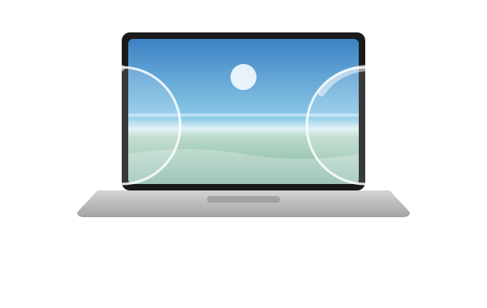
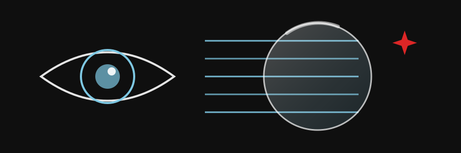
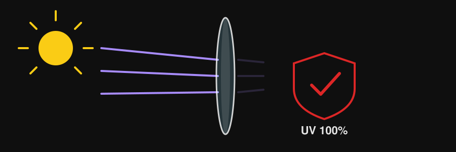

Protección contra luz azul, bloqueo UV y antirreflejante premium en un solo tratamiento. Así trabajan tus micas cuando las eliges bien.

Filtra la luz azul dañina (385–445 nm) de pantallas y LEDs, dejando pasar la benéfica.
Protección ultravioleta completa para cuidar tu vista en exteriores.
Menos reflejos, más claridad y mejor apariencia al mirar y ser mirado.
Repele agua, grasa y polvo. Micas más limpias y fáciles de mantener.
Materiales de alto índice: micas más delgadas y ligeras para graduaciones altas.
La línea Revelance se oscurece con el sol y se aclara en interiores.


Una sola distancia: lejos, cerca o intermedia. Para miopía, hipermetropía y astigmatismo.
Dos zonas: lejos y cerca en la misma mica. Para vista cansada combinada con otra graduación.
Todas las distancias con transición suave, sin línea visible. La opción más completa.
El diseño correcto depende de tu edad y graduación. En tu examen te decimos cuál te conviene.